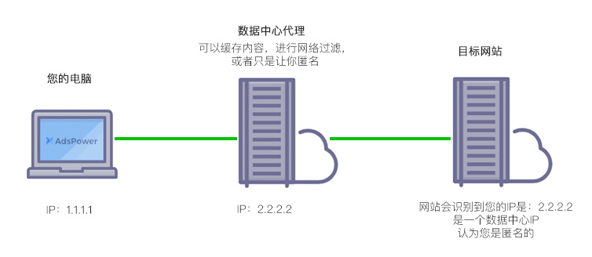

data center IPs are assigned by Internet Service Providers (ISPs) to data centers or hosting providers and are used by specialized equipment such as servers or network equipment to connect to the Internet. These IP addresses are usually static because they are assigned to a specific set of devices and cannot be changed. In addition, due to the large amount of data traffic that data centers need to handle, data center IP generally has high-speed bandwidth and low latency.
On the other hand, Residential IP refers to the IP address assigned by ISP to individual users to connect personal devices (such as computers, mobile phones, tablets, etc.) to the public Internet. These IP addresses can be static (fixed) or dynamic (new IP addresses are generated each time the router is rebooted). Since Residential IP is mainly used for lightweight applications such as general Internet access and e-mail, its bandwidth and latency are usually low. In addition, ISPs may restrict the use of Residential IP, such as limiting the number of devices connected simultaneously and upload/download speed.
data center IP VS Residential IP
When building a network environment, I often hear people mention data center IP and Residential IP. So what is the difference, what are the uses of each, and how should we choose? Let’s see the detailed introduction in the next article.
data center IP：IP addresses from secondary companies, usually provided by cloud server providers.
Residential IP：An IP address from a standard Internet Service Provider (ISP), usually DSL or cable, attached to a physical geographic location.
An IP address is an Internet Protocol address that uniquely identifies each device on a network. Since different types of IP addresses have different functions and attributes, there are many differences between data center IP and Residential IP.
Allocation:
data center IPs are usually assigned by Internet Service Providers (ISPs) or data center providers. These IP addresses can be static IP addresses (i.e. do not change over time) to ensure that servers and applications are accessible from specific IP addresses at all times. In contrast, the Residential IP address is usually a dynamic IP address (that is, it may change), and the ISP automatically assigns a temporary IP address to each user.
Speed and Latency:
data center IP is usually set in a high-speed network environment to support a large amount of data traffic and real-time interaction. This allows the data center IP to provide faster download and upload speeds and lower latency. In contrast, Residential IP speed and latency depend on factors such as the user's Internet service plan, device, location, and connection quality. The network bandwidth and response speed of Residential IP is usually low, which will limit some online operations, such as video streaming or online gaming.

Best US Static Proxy IP
IPRoyal is an extremely friendly proxy service provider in China, and its residential proxy solutions are very attractive
View IPRoyal
cheapest static proxy
Proxy-seller is a data center proxy provider popular with many small internet marketers.
View Proxy-seller
Most Affordable Static Proxy
Shifter.io is a well-known proxy service provider that aims to provide users with privacy protection and a better Internet experience.
View Shifter.ioIP address sharing:
Residential IPAddresses are often shared with other households or businesses. This means that multiple devices on the same network will all share the same IP address and bandwidth, which can lead to poor performance. In contrast, data center IPs are usually dedicated and limited to a single customer or application, enabling more efficient data transfer and network responsiveness.
safety:
Since data center IPs are often used to host sensitive information and business applications, encryption and other security measures are required. This includes authentication, access control, data encryption, and more. In contrast, Residential IP usually does not have the high security requirements like data center IP, but still needs to follow some best practices, such as regular changes of router passwords, settings of network firewalls, etc.
Failover:
data center IPs often have flexible failover mechanisms to ensure that servers or services continue to work in the event of a failure. This includes clustering, load balancing, fault tolerance, and more. In contrast, Residential IP usually does not have this powerful failover function, and users need to solve the problem by themselves.
To sum up, the difference between data center IP and Residential IP involves many aspects such as allocation method, speed and latency, IP address sharing, security and failover. Knowing these differences can help users better understand the different types of IP addresses, so they can better choose the Internet service plan and application that suits them.
what is data center IP？
A data center IP refers to a static IP address assigned by a data center provider or Internet Service Provider (ISP) to host facilities such as web servers, applications, and storage. The data center IP is usually dedicated and limited to a single customer or application, so it can be ensured that the server can be accessed from a specific IP address at any time. This is very important for businesses that require fast, reliable, and efficient data transmission and network response, such as e-commerce, online gaming, video streaming, and more. Data center IPs are also generally considered more secure, as data center providers typically implement a range of security measures such as authentication, data encryption, access control, and more.
As shown in the figure, we take the IP of the data center: 161.117.37.244 as an example, and then you can query the IP address information by visiting this website https://whatismyipaddress.com/, and you can see the following:

A data center proxy is a proxy created from the data center IP subnet on a data center server. Basically, a proxy created through a server provider such as Alibaba Cloud, Amazon Cloud, Ucloud, Vultr, or Digital Ocean.

The concept of a data center proxy is to host the proxy on a dedicated server in a data center and let the dedicated server act as an intermediary between our computer and the server target.
What is Residential IP？
Residential IP refers to the Internet access method provided by Internet Service Providers (ISPs) for home users. With Residential IP, users can access the Internet through a wide area network (such as the public Internet), and are usually assigned an IP address dynamically.

Normally, Residential IP will use a dynamic IP address, which means that the user's IP address may change every time the Internet is reconnected. Compared with fixed IP addresses, dynamic IP addresses are not only more suitable for home users, but also enable better utilization and management of IP resources.

It should be noted that Residential IP is usually not suitable for applications such as servers that require stable and high-speed bandwidth. In addition, because Residential IP is shared by multiple users, network security also needs special attention.
比较Residential IPanddata center IP advantage
Residential IPanddata center IP is two different types of IP addresses, each with different advantages and application scenarios.
Residential Advantages of IP:
1、Residential IP prices are relatively cheap, suitable for families or individual users.
2、使用Residential IP addresses obtained for free are usually allocated dynamically, which can better realize the utilization and management of IP resources.
3、由于Residential IP addresses are provided and managed by Internet Service Providers (ISPs), so ISPs usually provide users with better network connections and technical support based on actual needs.
data center Advantages of IP:
1、data center IP has higher bandwidth and more stable connection speed, and is suitable for application scenarios that require large traffic and high-speed connections.
2、data center IP is usually a static IP address, which is convenient for remote access, server construction and other operations, and is also suitable for application scenarios that require stable IP addresses such as web applications, database servers, and game servers.
3、data center IP is relatively safe, because it exists in a closed data center network, and it will be less attacked and threatened than Residential IP.
在选择Residential IPanddata center Before IP, it is necessary to comprehensively consider and select according to actual needs and application scenarios.

data center For which applications is IP better suited?
data center IP is usually suitable for applications that require high speed and high stability, such as:
1、Website or application: For websites or applications that require fast loading and response, data center IP can provide faster access speed and higher reliability, thereby improving user experience.
2、Game Servers: Game servers require high-speed, low-latency network connections to ensure uninterrupted player interaction. data center IP can provide an optimized network environment and professional game server equipment to meet the needs of game servers.
3、Large-scale data processing: For tasks that need to process large amounts of data and require high-speed and reliable connections, such as artificial intelligence and machine learning and other application scenarios, data center IP can provide efficient network bandwidth and low-latency connections, thereby improving the efficiency of task processing.
总之，data centerIP is suitable for applications that require high-speed and high-stability network connections, but it is also necessary to consider the cost factor and choose the most suitable solution according to the actual situation.
Residential For which applications is IP better suited?
Residential IP is usually suitable for some more common network applications, such as:
1, Daily Internet access: Residential IP is sufficient to support basic network tasks such as daily Internet access, web browsing, sending emails, and watching videos.
2、Home office: For those who need to work or attend classes remotely from home, Residential IP can provide sufficient bandwidth and stability to meet the basic network connection requirements for office and study.
3、Personal website or blog: If you need to build a personal website or blog in your residence, Residential IP is also sufficient to support this small-scale application.
It should be noted that the speed and reliability of Residential IP may not be as good as data center IP, so if the application requires higher stability and faster speed, data center IP is recommended. At the same time, when using Residential IP, it is also necessary to follow the relevant local laws and regulations of the network service provider.
Residential IPanddata center Which IP is faster?
Usually, data center IP will be faster than Residential IP. This is because the data center is usually deployed in an optimized network environment with higher bandwidth and more stable connection speed, and also uses more advanced network equipment and technologies, such as load balancing, CDN acceleration, etc. The Residential IP exists in the public Internet service provider network, and its speed is affected by many factors, such as network congestion, equipment performance, etc., and may fluctuate and be unstable. Of course, the specific speed needs to be evaluated according to the specific situation and cannot be generalized.